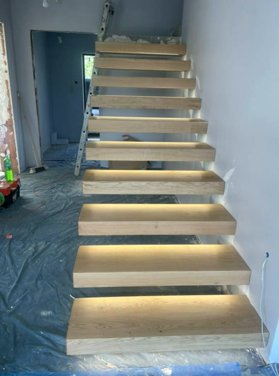
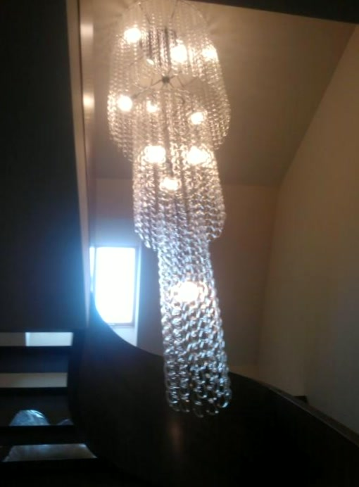
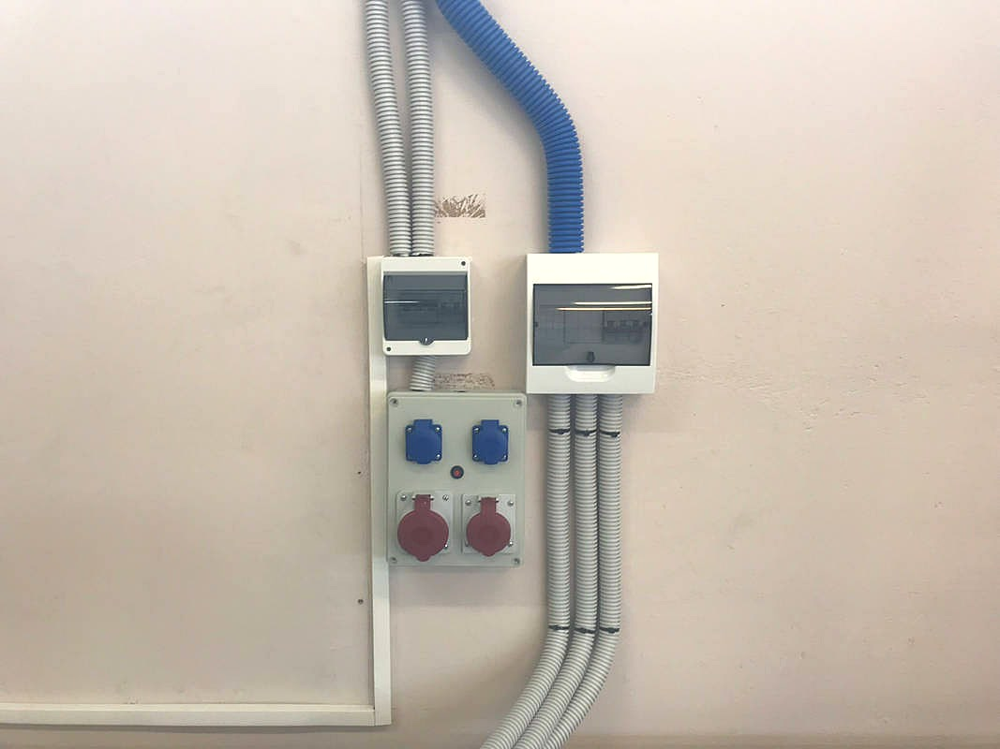
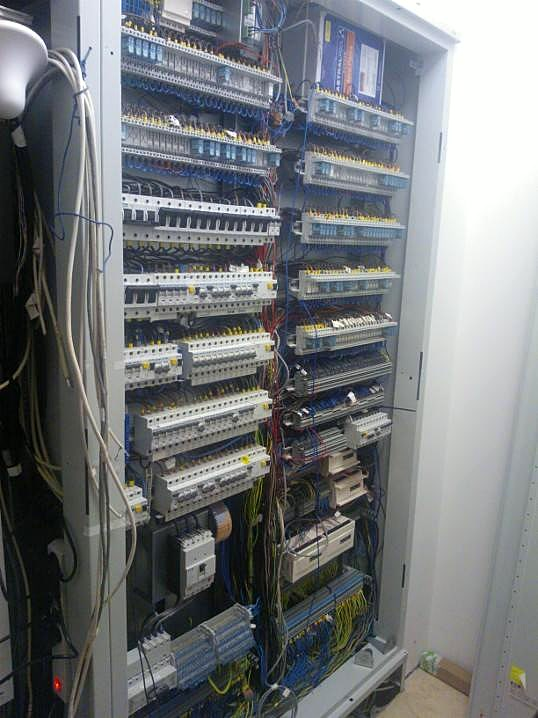

Galeria
Realizacje z bliska
Zdjęcia prosto z naszych zleceń w Szczecinie i okolicy: rozdzielnice, oświetlenie LED i automatyka. Bez retuszu.

Prosto z naszych zleceń
10 zdjęć · kliknij, żeby powiększyćWięcej w Google







Planujesz coś podobnego?
Zgasło? Iskrzy? Bezpiecznik nie daje się włączyć? Odbieramy całą dobę, 7 dni w tygodniu. Opowiedz, co się dzieje, a powiemy, kiedy możemy być i co wyłączyć do naszego przyjazdu.